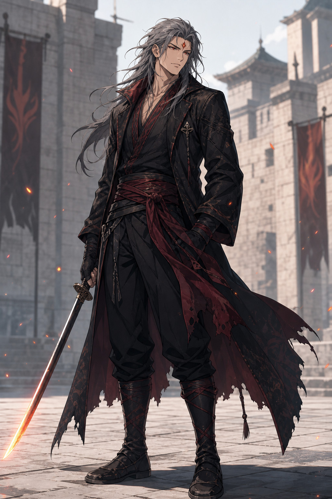

DESIGN ARCHIVE · FINAL SELECTION
다섯 인물,
정본 선택 완료.
50개 후보 중 최종안이 확정되었습니다. 금빛 테두리와 “정본 선택” 표식이 있는 이미지를 확인할 수 있으며, 이미지를 누르면 크게 볼 수 있습니다.
10 2대 원수03 3대 원수10 육군 중장09 첫째 형01 해군 대장

CANON STATUS
능력과 외형,
모두 정본 확정.
2대 원수 10번, 3대 원수 3번, 육군 1번대 중장 10번, 첫째 형 9번, 해군 대장 1번을 정본 캐릭터 갤러리에 반영했습니다. 이 페이지는 비교 과정과 나머지 후보를 보관하는 디자인 아카이브입니다.